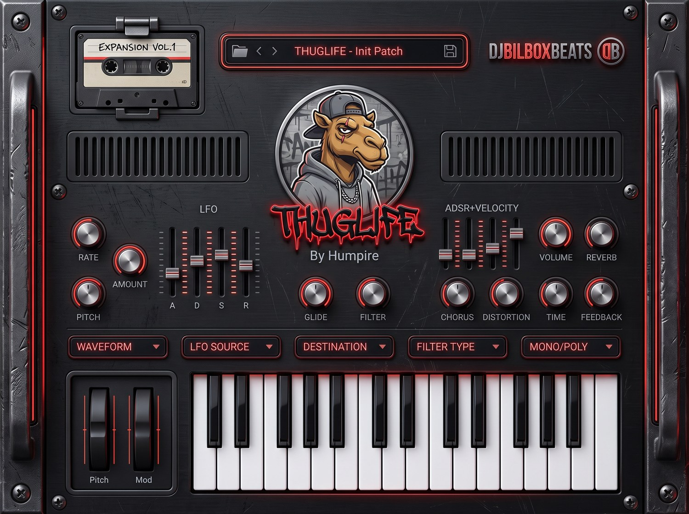

THUGLIFEBy Humpire
The west coast, in one plugin. Whistle leads that cut through a mix, lowrider subs that move the trunk, hazy Sunday pads and a distortion stage built to be pushed. No pages, no menus, no tutorial: every knob that matters is on the front panel, and the sound is one turn away.
One screen. That's the whole idea.
Most synths make you dig. Three pages of tabs, a modulation matrix to read like a spreadsheet, and forty minutes later you still don't have the sound you heard in your head. THUGLIFE takes the opposite bet: everything is visible at once. LFO on the left, envelope on the right, the effects rack under your thumb, and the five selectors — waveform, LFO source, destination, filter type, mono/poly — in a single row.
You load a preset, you grab a knob, you hear it move. That's the workflow. It was built for beatmakers who write fast and don't want the plugin to be the slow part of the session.
60 presets that already sound like the tape
Not 2000 patches you'll never open — sixty sounds written one by one for this record: G-funk, lowrider funk, trap and street soul. Named the way they sound, so you find them by feel instead of by number.
Bass · 14
Lowrider Sub, Trunk Rattler, Compton Bottom, Hydraulics 808, Six-Fo Sub, Regulate Bass, Boulevard Bass…
Lead · 13
G-Funk Whistle, Chronic Lead, Long Beach Lead, Candy Paint Lead, Slab Lead, Swangin Lead, Sunset Lead…
Pad · 11
Palm Tree Pad, Bompton Haze, Smoke Session, Hood Dusk, Streetlight Pad, Hazy Sunday, Nightshift Pad…
Keys · 8
Blunted Rhodes, Sunset Strip Keys, Porch Light Keys, Cruisin Chords, Barbershop Keys, Late Night Keys…
Pluck · 7
Dice Game Pluck, Chrome Rim Pluck, Domino Pluck, Chain Link Pluck, Gin and Juice Pluck, Alley Pluck…
FX · 4
Six Fo Riser, Alley Echo, Scanner Sweep, Last Call Outro — transitions and tails, ready to drop between sections.
Templates · 3
Init Patch, Blank Mono, Filter Sweep Template — clean starting points when you want to build it yourself.
The engine
Oscillator, 5 shapes
Sine, square, saw, triangle and noise. Every edge is band-limited at the source, so a bright saw stays bright instead of folding into grit.
Filter, 3 modes
Low pass, band pass, high pass on a state-variable design. Push the resonance and it sings; the envelope opens it in octaves, so it bites the same low and high.
ADSR + velocity
Four faders, from a 1 ms snap to a five-second tail. Velocity is wired in — play softer, it opens less.
LFO with a destination
Sine, triangle, square or saw from 0.1 to 20 Hz, routed to pitch, filter cutoff or amplitude. Vibrato, wobble, tremolo — one dropdown.
Distortion built to be pushed
Soft-clip drive with a tone control after it. It saturates instead of tearing, so a sub keeps its weight while the mids get dirty.
Chorus, delay, reverb
Stereo chorus for width, a feedback delay with time and feedback on their own knobs, and a room that sits behind the note instead of drowning it.
Mono or poly, 16 voices
Flip to mono with glide for a slurred whistle lead, or poly for chords. Glide goes to half a second.
Pitch & mod wheels
Real wheels on the panel, and they follow your controller. Bend, then ride the mod wheel — no mapping screen.
The cassette slot is an expansion bay
The tape at the top left isn't decoration. THUGLIFE reads
.thuglifeexp expansion packs, and the label shows which one is
loaded. Packs appear as their own section in the preset menu — your factory
sounds stay where they are, nothing gets overwritten.
EXPANSION VOL.1 is included — 22 extra patches (4 bass, 5 leads, 4 keys, 4 plucks, 5 pads) written in the same west coast language: 808 Deacon, Fade Away Lead, Barbershop Keys, Open Block Pad. Drop the file in, it shows up on the tape.
Made to look like gear, not software
The panel is a full render — brushed metal, rack ears, red neon — not a flat UI kit. Humpire watches you work from the middle of it. The keyboard lights up red under your fingers and the velocity meter follows how hard you hit, whether the notes come from your controller or from a mouse click.
Specs, straight
| THUGLIFE 1.0 | |
|---|---|
| Formats | VST3 + standalone app (no DAW needed) |
| System | Windows 10 / 11, 64-bit. macOS not yet — it's on the roadmap. |
| Hosts | FL Studio, Ableton Live, Reaper — any VST3 host |
| Voices | 1 (mono, legato + glide) to 16 (poly) |
| Presets | 60 factory, plus EXPANSION VOL.1 (22) — and the bay takes more |
| Effects | Distortion, chorus, delay, reverb — always on the panel |
| Sample rates | 44.1 kHz to 192 kHz |
| Coming in 1.1, free | Full DAW automation and saving your own patches. Today the knobs respond live and a session reopens on the right preset. |
| Licence | One payment, use it on your own machines, keep every release you make |
Installation takes a minute
A normal Windows installer. The VST3 goes to
C:\Program Files\Common Files\VST3 — the folder every host
already scans — and the standalone app gets its shortcut. Open your DAW,
rescan if it doesn't show up on its own, and THUGLIFE is in your instrument
list.
Questions
Can I use it on tracks I sell?
Yes. Everything you make with THUGLIFE is yours — beats, albums, sync, streaming, no extra fee and no credit required. The only thing you can't do is resell or redistribute the plugin or its presets themselves.
Is there a Mac version?
Not today. Version 1.0 is Windows VST3 and standalone. A macOS build (VST3 + AU, Intel and Apple Silicon) is planned, and it'll be free for anyone who already bought it.
Do I need a DAW?
No. The standalone app runs on its own — plug in a MIDI keyboard, pick your audio device and play. The VST3 is there for when you're producing.
What's the difference with STATION SYNTH?
Different job. STATION SYNTH is a big wavetable machine with thousands of presets and eleven libraries. THUGLIFE is a one-oscillator street synth you learn in five minutes — subs, whistles, plucks and pads with a distortion stage in front. Producers own both for a reason.
How does the price work?
The catalogue price is $97. There's a rotating promotion every week of the month, so what you see above is what you pay right now — the timer tells you when it changes.
THUGLIFE 1.0 — VST3 and standalone, Windows 64-bit. VST is a trademark of Steinberg Media Technologies GmbH. End-user licence: commercial use of your own productions is allowed, on as many releases as you like. Reselling or redistributing the plugin, its presets or its expansions is not.